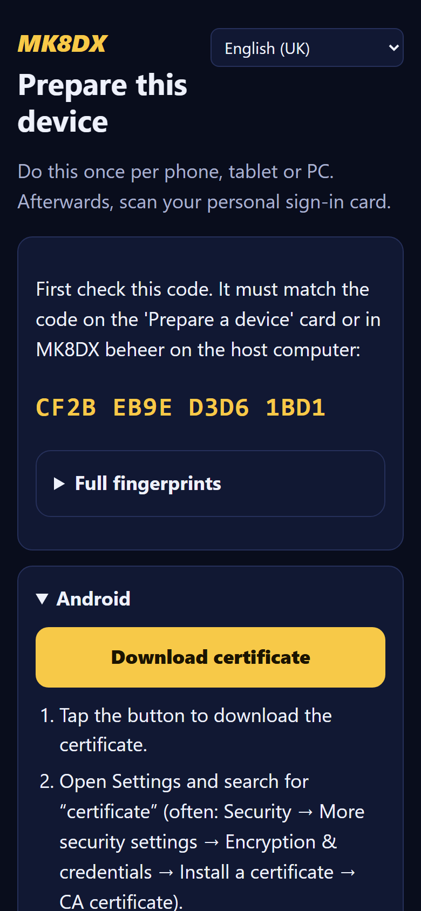
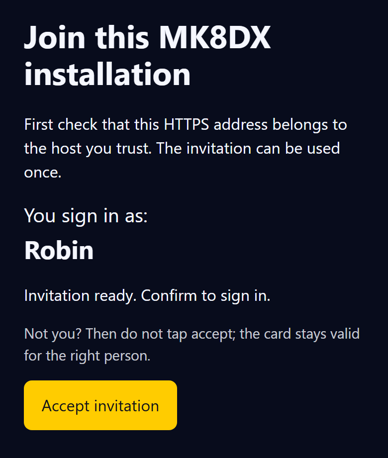

Показаны только шаги для вашего выбора.
MK8DX дома или в вашем клубе — руководство
Это машинный перевод английского руководства; основной считается английская версия. Исправления приветствуются через форму issue «Translation correction».
Это руководство шаг за шагом ведёт вас от пустого компьютера до сыгранного вечера. Знания в области ИТ не нужны. Читайте главы по порядку; каждая глава опирается на предыдущую.
Сначала честно: установка для дома и клуба выпущена начиная с версии 0.2.0. Windows 11 проверена от начала до конца, включая телефон на Android в сети. Linux проверялся только в WSL 2, ещё не на отдельном Linux-компьютере и не на Raspberry Pi. Пакеты для macOS собраны, но ещё не проверены на настоящем Mac, а iPhone пока не тестировался. Там, где что-то ещё не проверено или не собрано, об этом сказано в самом шаге.
Как читать шаг: после Сделайте идёт то, что вы делаете, после Вы увидите — что должно произойти, а после Видите что-то другое? — что делать в этом случае. Слова, выделенные жирным, — это кнопки или тексты, которые вы видите на экране именно так.
1. Что такое MK8DX дома или в клубе и что вам нужно?
MK8DX — это сайт для Mario Kart 8 Deluxe: хранение и сравнение результатов гонок на время, записей LiveTrial и турнирных вечеров. С этой установкой сайт работает на одном компьютере в вашей собственной сети. Телефоны, планшеты и другие компьютеры в той же сети открывают сайт через этот компьютер. Ничего не уходит в интернет.
Каждый входит с личной карточкой входа: карточкой с QR-кодом. QR-код — это квадратный штрихкод, который вы сканируете камерой телефона или планшета.
В этом руководстве компьютер, на котором работает MK8DX, называется компьютер MK8DX.
Что вам нужно:
- Один компьютер, который остаётся включённым, пока люди играют: Windows 11 с процессором Intel или AMD, Linux или macOS. Рекомендуется 8 ГБ памяти. Программа установки проверяет, что свободно не меньше 6 ГБ на диске.
- Домашняя сеть: Wi-Fi или сетевые кабели вашего роутера. Роутер — это коробочка, которая создаёт вашу сеть (часто от вашего интернет-провайдера). Все устройства должны быть в одной сети. Не используйте гостевую сеть: обычно она изолирует устройства друг от друга.
- Телефоны, планшеты или другие компьютеры для игроков, желательно с камерой для сканирования QR-кодов.
- Принтер удобен для печати карточек входа и кода восстановления, но не обязателен.
Что вам не нужно:
- Интернет во время игры не нужен. Только при подготовке вы один раз скачиваете Docker, Python и пакет MK8DX (или кто-то даёт их вам на USB-флешке).
- Никакого аккаунта в другой компании, никакого адреса электронной почты и никакого облака.
- Никакой подписки. MK8DX и Python бесплатны. Docker Desktop бесплатен для личного использования и небольших организаций; условия указаны на сайте Docker. В Linux вы используете бесплатный Docker Engine.
2. Подготовка компьютера
MK8DX нужны две бесплатные вспомогательные программы:
- Docker запускает программы в изолированных «контейнерах». В них работают сайт и база данных MK8DX. В Windows и macOS программа называется Docker Desktop.
- Python — это язык программирования. На нём написан установщик MK8DX. Вам нужен Python от 3.12 до 3.15.
Выполните только часть для вашего компьютера (2A, 2B или 2C), а две другие пропустите.
2A. Подготовка Windows 11
- Сделайте проверьте, какой процессор у вашего компьютера: Пуск → Settings (Параметры) → System (Система) → About (О системе), строка System type (Тип системы).Вы увидите «64-bit operating system, x64-based processor» («64-разрядная операционная система, процессор x64»).Видите что-то другое? Если там написано ARM, Windows-пакет MK8DX не подходит: он существует только для x64 (Intel и AMD).
- Сделайте сначала установите WSL (подсистема Windows для Linux). Это часть Windows, на которой работает Docker; без WSL Docker Desktop не установится. Щёлкните правой кнопкой мыши по кнопке «Пуск» и выберите Terminal (Admin) (Терминал (администратор)) или Windows PowerShell (Admin) (Windows PowerShell (администратор)). Нажмите Yes (Да), когда Windows попросит разрешение. Введите
wsl --installи нажмите Enter.Вы увидите Windows скачивает и устанавливает WSL и Ubuntu; это занимает несколько минут. В конце говорится, что нужно перезагрузить компьютер. Перезагрузите компьютер.Видите что-то другое? Если после перезагрузки открывается окно с запросом имени пользователя и пароля для Ubuntu: введите любое имя и пароль (MK8DX они не нужны), а затем закройте окно. Если сказано, что WSL уже установлена, введитеwsl --updateи нажмите Enter. Если упоминается виртуализация («Virtual Machine Platform» или «virtualization»), значит, виртуализация выключена в BIOS компьютера; включите её (производители часто называют её Intel VT-x или AMD-V) или попросите помощи. - Сделайте скачайте Docker Desktop для Windows (x86_64 / AMD64) с docker.com и откройте скачанный файл.Вы увидите установщик Docker с вариантом использовать WSL 2. WSL — это часть Windows, на которой работает Docker. Оставьте этот вариант отмеченным и нажмите OK.Видите что-то другое? Если Windows спрашивает, разрешить ли этому приложению вносить изменения, нажмите Yes (Да).
- Сделайте дождитесь окончания установки и перезагрузите компьютер, если Docker об этом попросит.Вы увидите после перезагрузки открывается Docker Desktop (или откройте его сами из меню «Пуск»). В первый раз Docker попросит принять его условия.Видите что-то другое? Если Docker предлагает войти или создать аккаунт: MK8DX аккаунт Docker не нужен, пропустите это, если Docker позволяет. Если Docker всё ещё сообщает, что WSL отсутствует или её нужно обновить, повторите шаг 2 (
wsl --installилиwsl --update) и перезагрузитесь. - Сделайте подождите в окне Docker Desktop.Вы увидите Engine running (движок работает) внизу слева.Видите что-то другое? «Engine starting» (движок запускается) может длиться несколько минут. Если всё зависло или показана ошибка, перезагрузите компьютер и снова откройте Docker Desktop. Docker должен быть в обычном режиме Linux-контейнеров (не «Windows containers»).
- Сделайте зайдите на python.org → Downloads и скачайте Python install manager (менеджер установки Python) для Windows (файл заканчивается на
.msix). Сейчас это официальный способ установки Python в Windows. Откройте скачанный файл и нажмите Install (Установить).Вы увидите Windows устанавливает менеджер установки Python; затем окно можно закрыть.Видите что-то другое? Его можно установить и из Microsoft Store: найдите «Python install manager» и нажмите Install (Установить). Используйте один из двух способов, а не оба. - Сделайте нажмите «Пуск», введите
PowerShell, откройте Windows PowerShell, введитеpy install 3.15и нажмите Enter. Так устанавливается сам Python (менеджер установки — лишь инструмент, который его загружает).Вы увидите в первый раз несколько вопросов для проверки настроек; отвечайте на них клавишей Enter (предложенный вариант) илиy. Затем Python скачивается и устанавливается. На вопрос о добавлении папки в PATH можно ответитьy; это не обязательно.Видите что-то другое? Установите именно 3.15, как указано выше; 3.12, 3.13 или 3.14 тоже работают, более новая версия (3.16 или позже) — пока нет. - Сделайте закройте PowerShell, откройте его снова, введите
python --versionи нажмите Enter.Вы увидитеPython 3.15и затем число, напримерPython 3.15.2.Видите что-то другое? Если открывается Microsoft Store или сказано, что python не найден: нажмите «Пуск», введите Manage app execution aliases (Псевдонимы выполнения приложений) и откройте этот пункт. Включите Python (default) и выключите App Installer python.exe и python3.exe. Если вы раньше устанавливали старый Python или «Python launcher», удалите его через Settings → Apps → Installed apps (Параметры → Приложения → Установленные приложения) и попробуйте снова.
2B. Подготовка Linux (Ubuntu или Debian)
Linux ещё не проверялся с MK8DX от начала до конца. Шаги написаны для Ubuntu 24.04 или новее. Вы вводите их в терминале: окне, где отдают текстовые команды (в Ubuntu он открывается сочетанием Ctrl+Alt+T). Завершайте каждую команду нажатием Enter. sudo перед командой означает «от имени администратора этого компьютера»: Linux тогда спрашивает ваш пароль, и при вводе вы не видите символов. Это нормально.
- Сделайте введите
python3 --version.Вы увидитеPython 3.12,3.13,3.14или3.15.Видите что-то другое? Меньший номер (например, в Debian 12 — 3.11) слишком старый; 3.16 и выше пока не поддерживаются. Тогда вам нужна более новая версия вашего Linux; в Ubuntu 24.04 есть Python 3.12. - Сделайте введите
sudo apt update, а затемsudo apt install docker.io docker-compose-v2 python3-venv unzip. На вопрос, продолжать ли, ответьте Y и Enter.Вы увидите пакеты скачиваются и устанавливаются.Видите что-то другое? Если apt не находит пакет, в вашем Linux он называется иначе (такое бывает в Debian). Продолжайте и на шаге 5 проверьте, работает ли Docker Compose. - Сделайте введите
sudo systemctl enable --now docker. Это запускает Docker сейчас и при каждом запуске компьютера.Вы увидите никакой ошибки (иногда строку, начинающуюся с «Created symlink»). - Сделайте введите
sudo usermod -aG docker $USER. Это даёт вашему пользователю право пользоваться Docker. Затем выйдите из системы и войдите снова (или перезагрузитесь): право начинает действовать только после повторного входа.Вы увидите никакой ошибки. → Примечание: любой участник группы docker фактически имеет права администратора на этом компьютере. Добавляйте только себя. - Сделайте проверьте командой
docker info, а затемdocker compose version.Вы увидите список сведений без ошибки и «Docker Compose version» с номером.Видите что-то другое? «permission denied» (доступ запрещён): выполните шаг 4 и не забудьте выйти из системы. «Cannot connect to the Docker daemon» (не удаётся подключиться к службе Docker): выполните шаг 3.
Брандмауэр — это защита, которая решает, какие подключения компьютер пропускает. Если в вашем Linux активен брандмауэр ufw или firewalld, программа установки в главе 3 покажет, какая команда пропускает MK8DX.
2C. Подготовка macOS
Примечание: macOS ещё не проверялась на настоящем Mac. Шаги ниже описывают то, чего программа установки ожидает в macOS.
- Сделайте выберите меню Apple → About This Mac (Об этом Mac) и посмотрите на Chip (Чип) или Processor (Процессор).Вы увидите чип Apple (M1, M2 и новее): возьмите пакет
macos-arm64.Видите что-то другое? Процессор Intel: возьмите пакетmacos-amd64. Ему нужна macOS 10.15 или новее и Docker Desktop, который ещё поддерживает ваш Mac. - Сделайте скачайте Docker Desktop для Mac с подходящим чипом с docker.com, откройте скачанный файл и перетащите Docker в Applications (Программы).Вы увидите Docker в папке «Программы».
- Сделайте откройте Docker. Примите условия; если macOS спросит пароль, введите его.Вы увидите через некоторое время Engine running (движок работает) в окне Docker Desktop.Видите что-то другое? Если Docker предлагает войти: MK8DX аккаунт Docker не нужен, пропустите это, если Docker позволяет.
- Сделайте скачайте установщик Python 3.15 для macOS с python.org и откройте его. Пройдите шаги кнопками Continue (Продолжить) и Install (Установить).Вы увидите сообщение об успешной установке.
- Сделайте откройте Terminal (Терминал) (Applications → Utilities → Terminal, то есть Программы → Утилиты → Терминал), введите
python3 --versionи нажмите Enter.Вы увидите отPython 3.12до3.15.Видите что-то другое? Меньший номер (например, 3.9 от самой Apple): закройте Терминал и откройте снова. Если номер всё ещё меньше, установите Python с python.org ещё раз. - Сделайте введите
docker infoв Терминале.Вы увидите список сведений без ошибки.Видите что-то другое? Запустите Docker Desktop и дождитесь Engine running.
3. Установка MK8DX
Распаковка пакета
- Сделайте скачайте пакет MK8DX для дома или клуба для вашей системы: Windows, Linux или macOS, а для Linux и macOS ещё и для вашего процессора (amd64 или arm64). Чтобы проверить, что файл скачан правильно, сравните его SHA-256 с его строкой в
SHA256SUMS.txtиз того же релиза (Windows:Get-FileHash <file> -Algorithm SHA256; Linux:sha256sum <file>; macOS:shasum -a 256 <file>); см. такжеdocs/RELEASE_PACKAGES.md#check-a-download.Вы увидите zip-файл в папке «Загрузки».Видите что-то другое? Если браузер предупреждает, что файл небезопасен или редко скачивается: выберите Keep (Сохранить). Windows: затем щёлкните zip-файл правой кнопкой → Properties (Свойства), отметьте внизу Unblock (Разблокировать) и нажмите OK. Сделайте это до распаковки; иначе Windows (Smart App Control, интеллектуальное управление приложениями) может позже заблокироватьStart-MK8DX-LAN.cmd. Не отключайте Smart App Control: потом её можно снова включить только переустановкой Windows. - Сделайте распакуйте zip-файл в постоянную папку, например в папку MK8DX в «Документах». Windows: щёлкните zip-файл правой кнопкой → Extract All (Извлечь все). Выберите папку, которая останется на месте: MK8DX потом всегда запускается из этой папки, поэтому не перемещайте и не удаляйте её.Вы увидите папку, в которой среди прочего есть
Start-MK8DX-LAN.cmd,README-FIRST.txtи папкиdocs,imagesиtooling.Видите что-то другое? Если вы только открыли zip-файл в Проводнике, действительно извлеките его: запуск изнутри zip-файла не работает. Linux без файлового менеджера (сервер или WSL):unzip ~/Downloads/mk8dx-a2-linux-amd64-<version>.zip -d ~/Documents/MK8DX(с вашим именем файла;unzipустанавливается в шаге 2 главы 2B). В zip-файле есть одна папка с именем пакета; откройте её, чтобы запустить MK8DX.
Запуск в Windows
- Сделайте в распакованной папке дважды щёлкните Start-MK8DX-LAN.cmd.Вы увидите окно с логотипом MK8DX и обратным отсчётом 3-2-1-GO со звуковыми сигналами (как его отключить), затем строки вроде «Пакет MK8DX:» и «Частная установка:». В первый раз также показывается «Подготовка прилагаемых пакетов Python (один раз, без интернета).» и «Загрузка прилагаемых образов Docker. Это может занять несколько минут.» Это займёт несколько минут. Затем появится «MK8DX setup is open in your browser:» (установка MK8DX открыта в вашем браузере), и программа установки откроется в браузере.Видите что-то другое? См. сообщения ниже.
- Сделайте не закрывайте чёрное окно, пока не нажмёте Готово в программе установки. В окне об этом тоже сказано: «Keep this window open until you click Finish.» (не закрывайте это окно, пока не нажмёте Finish).
Сообщения в чёрном окне в Windows:
- «Нет Python версии от 3.12 до 3.15. Установите Python install manager с python.org (или из Microsoft Store), выполните: py install 3.15, заново откройте PowerShell и повторите попытку.» Выполните шаги 6–8 главы 2A, а затем снова дважды щёлкните Start-MK8DX-LAN.cmd.
- «Docker Desktop не установлен или не запущен. Запустите Docker Desktop в режиме Linux-контейнеров, дождитесь надписи "Engine running" и повторите попытку.» Запустите Docker Desktop, дождитесь Engine running и снова дважды щёлкните файл.
- Под ошибкой показано «Выбранный шаг остановлен. Прочитайте сообщение выше, прежде чем повторить попытку.» Прочитайте строку над ним, устраните причину и нажмите любую клавишу, чтобы закрыть окно.
Запуск в Linux и macOS
- Сделайте откройте терминал в распакованной папке. Linux: щёлкните правой кнопкой в папке и выберите «Open in Terminal» (Открыть в терминале), если ваш файловый менеджер это предлагает. В macOS и Linux работает и так: откройте Терминал, введите
cd(с пробелом после), перетащите папку в окно и нажмите Enter.Вы увидите терминал находится в папке пакета. - Сделайте введите
sh tooling/start-mk8dx.shи нажмите Enter.Вы увидите логотип MK8DX и обратный отсчёт 3-2-1-GO, затем «Пакет MK8DX:», номер Python, «Docker Compose version». В первый раз также «Загрузка прилагаемых образов Docker. Это может занять несколько минут.» и «Подготовка прилагаемых пакетов Python (один раз, без интернета).» Затем «Частная установка:» и «MK8DX setup is open in your browser:», и программа установки откроется в браузере.Видите что-то другое? Если браузер не открылся, скопируйте из терминала адрес, начинающийся сhttp://127.0.0.1:, в браузер. - Сделайте не закрывайте терминал, пока не нажмёте Готово.
Сообщения в терминале в Linux и macOS:
- «Нет Python версии от 3.12 до 3.15. Установите его (Ubuntu/Debian: sudo apt install python3 python3-venv; macOS: python.org) и повторите попытку.» Выполните главу 2B или 2C ещё раз.
- «Docker не запущен или этому пользователю нельзя его использовать (Linux: sudo systemctl start docker и вступите в группу docker; macOS: запустите Docker Desktop).» Linux: выполните шаги 3 и 4 главы 2B. macOS: запустите Docker Desktop.
- «Не удалось создать частное окружение Python (Ubuntu/Debian: sudo apt install python3-venv).» Установите python3-venv, как в шаге 2 главы 2B.
Программа установки в браузере
Программа установки — это страница в браузере, которая работает только на самом компьютере MK8DX. Она на языке вашего браузера (одном из 15 языков игры; иначе — на английском). Вверху справа находятся меню языков, чтобы выбрать другой язык, и Руководство: оно открывает это руководство. Внизу — Назад, иногда Дополнительно и Далее. Точки вверху показывают, насколько далеко вы продвинулись.
- Добро пожаловать в MK8DX.Сделайте прочитайте экран и нажмите Далее.Вы увидите «Быстрая проверка». Кнопка Восстановить резервную копию на этом экране нужна только для нового компьютера (глава 10).
- Быстрая проверка.Сделайте немного подождите.Вы увидите три зелёные галочки у Docker Desktop запущен, Достаточно свободного места на диске (с количеством ГБ) и Windows, Linux или macOS. Нажмите Далее.Видите что-то другое? Восклицательный знак с пояснением, например «Запустите Docker Desktop, дождитесь статуса «Engine running» и нажмите «Попробовать снова».» или «Освободите на этом диске не менее 6 ГБ.» Устраните причину и нажмите Попробовать снова. В Linux первая проверка тоже называется «Docker Desktop запущен»; там речь идёт о Docker Engine.
- Какой тип установки?Сделайте оставьте выбранным Сеть дома, в клубе или на LAN-вечере, интернет не нужен (рекомендуется) и нажмите Далее.Вы увидите «Ваша сеть».
- Ваша сеть. Сетевой адрес (IP-адрес) — это номер, по которому устройства находят этот компьютер в вашей сети, как номер дома.Сделайте прочитайте адрес под «Телефоны, планшеты и другие ПК подключаются к MK8DX по этому адресу:» и запишите его, например
https://192.168.1.50. Нажмите Установить.Вы увидите в Windows «Эта сеть настроена как домашняя (частная).» или «Сейчас Windows считает эту сеть общедоступной. Когда вы нажмёте «Установить», MK8DX отметит её как частную и разрешит только MK8DX.» В Linux и macOS фраза о сети здесь не показывается.Видите что-то другое? Если у компьютера несколько подключений (кабель и Wi-Fi), нажмите Дополнительно и в пункте «Выберите другой адрес этого компьютера:» выберите адрес той сети, в которой находятся и телефоны. Если написано «Сетевой адрес не найден.», подключите компьютер к домашней сети и нажмите Попробовать снова. - Установка.Сделайте подождите и не закрывайте окно.Вы увидите «MK8DX настраивается. Не закрывайте это окно.» и по очереди «Подготовка установки», «Разрешаем доступ к сети (Windows запросит разрешение)», «Запуск базы данных и сайта», «Проверка» и наконец «MK8DX работает. Осталось два коротких шага.» Нажмите Далее. В Windows окно Windows один раз спросит, может ли Windows PowerShell вносить изменения: нажмите Yes (Да). Так MK8DX помечает вашу домашнюю сеть как частную и пропускает через брандмауэр (защиту Windows) только MK8DX. Если MK8DX уже устанавливался на этом компьютере с этим адресом, это разрешение сохранилось, и Windows больше не спрашивает.Видите что-то другое? Красная ошибка: нажмите Детали, чтобы прочитать, что пошло не так, устраните причину и нажмите Попробовать снова. Если в окне Windows вы нажали No (Нет), будет сказано, что Windows не разрешила изменение; нажмите Попробовать снова, а затем Yes.
- Только Linux: брандмауэр.Сделайте во время или после установки нажмите Детали и найдите строку, начинающуюся с «Network:».Вы увидите «not-needed» (ничего делать не нужно) или «manual:» и за ним команду вроде
sudo ufw allow from 192.168.1.0/24 to 192.168.1.50 port 80,443 proto tcp. → Затем сделайте: введите в терминале именно эту команду (с вашим адресом, как он там показан). Без этой команды телефоны не смогут открыть сайт. - Ваш аккаунт администратора. Администратор — это человек, который добавляет людей и создаёт карточки входа; это вы.Сделайте введите имя в поле Ваше имя, например «Папа» или «Команда клуба», и нажмите Далее. Имя видно только внутри этой установки.Вы увидите «Кто играет?»
- Кто играет?Сделайте введите имена игроков в поле Имена (по одному в строке), каждое на своей строке, и нажмите Добавить. Или сразу нажмите Пропустить: это можно сделать позже точно так же в MK8DX beheer (глава 5).Вы увидите имена под «В этой установке:», себя — с «(администратор)» после имени. Нажмите Далее.
- Вход на телефонах и ПК.Сделайте здесь уже можно создать карточки входа (как — объясняют главы 5 и 6) или просто нажать Далее.Вы увидите «Готово! Приятных гонок.»
- Готово! Приятных гонок.Сделайте запишите два адреса: Сайт (например
https://192.168.1.50) и Новое устройство (напримерhttp://192.168.1.50/setup). Оставьте три галочки включёнными: Запускать MK8DX вместе с Windows, Создавать резервную копию каждую ночь и Создать ярлык «MK8DX beheer» на рабочем столе. Нажмите Готово.Вы увидите свой код восстановления (глава 4). → В Linux и macOS первая галочка называется «Запускать MK8DX при включении компьютера». В macOS она затем открывает Docker Desktop при входе в систему. В Linux об этом заботитсяsudo systemctl enable --now dockerиз главы 2B; если вы этого ещё не сделали, программа установки после «Готово» покажет именно эту команду. - Завершение.Сделайте прочитайте главу 4 и сохраните код восстановления. Затем нажмите Закрыть.Вы увидите «Теперь это окно можно закрыть.» Закройте вкладку браузера. В Windows чёрное окно попросит нажать клавишу; нажмите любую, и оно закроется. Если ничего не делать, страница установки сама остановится через 10 минут. Сам MK8DX продолжает работать.


4. Код восстановления и папка резервных копий
Резервная копия — это запасная копия всего, что есть в MK8DX: людей, времён, турниров и настроек. MK8DX делает резервную копию каждую ночь в 03:00 и хранит 7 самых новых. Резервные копии зашифрованы: без ключа их нельзя прочитать.
Код восстановления — это и есть ключ. Это пять групп по четыре буквы и цифры, например ABCD-EFGH-JKLM-NPQR-STUV. Он нужен только для восстановления резервной копии на другом компьютере.
- Сделайте после Готово посмотрите на карточку Код восстановления MK8DX.Вы увидите код, фразу «Без этого кода резервную копию не открыть. Он показывается только один раз.» и под ней папку, куда попадают резервные копии.
- Сделайте перепишите код на бумагу или нажмите Распечатать карточки, чтобы распечатать эту страницу. Проверьте его буква за буквой.Вы увидите код на бумаге. → Почему только один раз? MK8DX хранит код в защищённом виде на этом компьютере для ночных резервных копий, но больше никогда его не показывает. Если компьютер сломается, останется только бумага.
- Сделайте храните бумагу в надёжном месте, не рядом с компьютером. Тот, у кого есть код и резервная копия, может открыть всё.
Где находятся резервные копии:
- Windows: в папке «Документы», папка
MK8DX-backups(на диске:C:\Users\<your name>\Documents\MK8DX-backups). - Linux и macOS: в вашей домашней папке, папка
Documents/MK8DX-backups(то есть~/Documents/MK8DX-backups). Даже в Linux на другом языке эта папка называется Documents. - Программа установки показывает точную папку под кодом восстановления.
Время от времени копируйте папку MK8DX-backups на USB-флешку или другой диск. Иначе, если компьютер сломается, резервные копии останутся только на этом сломанном компьютере.
Если снять галочку Создавать резервную копию каждую ночь и нажать Готово, MK8DX прекратит ночное резервное копирование; уже созданные копии останутся. Если позже снова поставить галочку, копии продолжат создаваться с тем же кодом восстановления, и он больше не показывается. Если этого кода у вас больше нет, создайте новый, как описано ниже.
Новый код восстановления
Создайте новый код, если ваш код мог увидеть кто-то другой или если вы потеряли бумагу. Это работает начиная с версии 0.2.7.
- Сделайте откройте MK8DX beheer, нажимайте Далее, пока не появится «Готово! Приятных гонок.», поставьте галочку Создать новый код восстановления и нажмите Готово.Вы увидите карточку Код восстановления MK8DX с новым кодом, который показывается только один раз, и фразу о том, что более ранним копиям по-прежнему нужен старый код.
- Сделайте запишите новый код, как в шаге 2 выше. Храните старую бумагу вместе с более ранними копиями: они не преобразуются и открываются только старым кодом. Удалите эти старые копии и старую бумагу, когда они станут не нужны.Вы увидите следующие копии используют новый код.


5. Люди и карточки входа (MK8DX beheer)
MK8DX beheer (по-нидерландски «администрирование MK8DX») — это та же страница, что и программа установки, но для дальнейшей работы: добавления людей и создания карточек входа. Она работает только на самом компьютере MK8DX. Ярлык на рабочем столе на всех языках называется «MK8DX beheer»; заголовок страницы — Администрирование MK8DX.
Аккаунт — это тот, кто входит. Игрок — это игрок в рейтингах, со своими временами. После входа каждый выбирает или заявляет своего игрока на сайте. Имена никогда не связываются автоматически.
Открытие MK8DX beheer
- Сделайте (Windows): дважды щёлкните MK8DX beheer на рабочем столе. Этот ярлык запускает то же, что и Start-MK8DX-LAN.cmd. → Вы увидите: окно запуска с коротким гоночным вступлением, а затем в браузере страницу со словом «администрирование» вверху и заголовком Администрирование MK8DX. → Видите что-то другое? Ярлыка нет: дважды щёлкните Start-MK8DX-LAN.cmd в папке MK8DX.
- Сделайте (Linux): запустите MK8DX beheer с рабочего стола или из меню приложений. В некоторых средах рабочего стола Linux такой значок сначала нужно разрешить (щёлкните его правой кнопкой и выберите пункт, разрешающий запуск). Работает и
sh tooling/start-mk8dx.shв папке MK8DX, как в главе 3. → Вы увидите: терминал, а затем страницу Администрирование MK8DX. - Сделайте (macOS, не проверено): дважды щёлкните MK8DX beheer.command на рабочем столе или запустите
sh tooling/start-mk8dx.sh, как в главе 3. → Вы увидите: Терминал, а затем страницу Администрирование MK8DX.
- Сами ввели 127.0.0.1 с портом? Страница MK8DX lokaal beheer, которая запрашивает одноразовый код администратора, — это техническая страница хоста. Она вам не нужна: закройте её и откройте MK8DX beheer ярлыком, как описано выше.
Добавление людей
- Сделайте введите имена в поле Имена (по одному в строке) и нажмите Добавить.Вы увидите имена под «В этой установке:».
- Сделайте нажмите Далее.Вы увидите «Вход на телефонах и ПК» в два шага: Шаг 1 · Подготовьте устройство с карточкой Подготовить устройство (один раз на устройство, это ещё не выполняет вход) и Шаг 2 · Войдите как нужный человек, где для каждого человека есть блок с кнопкой Создать карточку.
Создание и печать карточек
- Сделайте нажмите Создать карточку рядом с человеком.Вы увидите QR-код с «Действует до» и временем. Карточка срабатывает один раз и действует 15 минут. Пусть человек отсканирует её сразу (глава 6), или распечатайте её.
- Сделайте сначала создайте нужные карточки, а затем нажмите Распечатать карточки.Вы увидите окно печати вашего браузера со всеми карточками на экране, включая карточку «Подготовить устройство».
- Сделайте создайте карточку и для себя (имя с «(администратор)»), если хотите входить на своём телефоне.
Замена или отзыв карточки
- Новая карточка: создаёт для этого человека новую карточку. Предыдущая карточка этого человека на этом экране тогда перестаёт работать.
- Отозвать карточку: карточка сразу перестаёт работать. Вы увидите «Отозвана: эта карточка больше не работает.» Используйте это, если карточка потеряна или попала не тому человеку.
- Отозвать можно только карточку, которая ещё есть на этом экране. Если вы уже закрыли MK8DX beheer, неиспользованная карточка сама истекает через 15 минут. Если ею, возможно, уже воспользовались, выберите ниже Выйти везде.
Выход человека на всех устройствах
- Сделайте откройте MK8DX beheer. На первом экране у каждого человека есть кнопка Выйти везде. Нажмите её.Вы увидите кнопка меняется на Уверены? Нажмите ещё раз.
- Сделайте нажмите ещё раз.Вы увидите «Выполнен выход на всех устройствах. С новой карточкой этот человек сможет войти снова.» Теперь этот человек вышел на сайте и в приложении, быстрое переключение на этот аккаунт одним нажатием исчезает, а открытые карточки этого человека перестают работать.Видите что-то другое? Рядом с вашим собственным именем второе нажатие показывает «Сами вы выходите через меню аккаунта на сайте («Выйти на всех устройствах»).», и выход ни для кого не выполняется.
Добавление телефона или устройства для одного человека
Пошаговый способ подключить телефон, планшет или ПК человека, в том числе iPhone или устройство без приложения MK8DX.
- Сделайте откройте MK8DX beheer и нажмите Добавить телефон или устройство рядом с человеком.Вы увидите «Добавить телефон или устройство для …» с именем и 1 · Доверие с карточкой Подготовить устройство и её коротким кодом.
- Сделайте на устройстве с приложением MK8DX (Android): отсканируйте QR-код в приложении. Без приложения (iPhone, iPad, другой телефон или ПК): отсканируйте его камерой и следуйте открывшейся странице, чтобы установить сертификат (глава 6). Проверьте, что страница или приложение показывает тот же код. Если это устройство уже подготовлено, пропустите этот шаг. Нажмите Далее.Вы увидите 2 · Сканировать карту входа с личной карточкой этого человека, «Личная для … Срабатывает один раз.» и обратный отсчёт вида «Действует ещё 14:59».
- Сделайте отсканируйте эту карточку тем же устройством и примите там приглашение (глава 6).Вы увидите в MK8DX beheer сам по себе в течение нескольких секунд: 3 · Готово и «Вход выполнен: …».Видите что-то другое? «Срок действия этой карточки истёк.» или «Эта карточка отозвана.»: нажмите Новая карточка; старая карточка перестаёт работать, когда вы создаёте новую. «Эта установка не может сообщить, была ли использована карточка»: проверьте устройство и нажмите Получилось.
- Сделайте нажмите Ещё одно устройство для второго устройства того же человека или Назад к людям.
Печать приветственной карточки
- Сделайте в окне «Добавить телефон или устройство» выберите A6 или A4 в поле Размер бумаги и нажмите Приветственная карточка.Вы увидите предпросмотр одной страницы, «Добро пожаловать в MK8DX, …!», с адресом и тремя пронумерованными шагами: 1 Доверие (QR-код «Подготовить устройство» и проверочный код), 2 Сканировать карту входа (личный QR-код с пометкой ЛИЧНАЯ и «Действует до») и 3 Готово.
- Сделайте нажмите Распечатать, а затем Назад.Вы увидите окно печати браузера только с приветственной карточкой.
- Карточка входа на ней срабатывает один раз и действует 15 минут с момента создания, в том числе на бумаге. Более долгую карточку MK8DX создать не может, поэтому печатайте её непосредственно перед тем, как отдать. Если напечатать без действующей карточки (на шаге 1 или после истечения срока), шаг 2 будет пустым полем: тогда человек получает новую карточку в тот же день. Часть «Доверие» остаётся действительной, пока MK8DX не переедет на другой адрес.
Закрытие MK8DX beheer
- Сделайте нажимайте Далее до «Готово! Приятных гонок.», оставьте галочки включёнными, нажмите Готово, а затем Закрыть.Вы увидите «Теперь это окно можно закрыть.» MK8DX продолжает работать.


6. Подготовка устройства и вход
Сертификат — это цифровое удостоверение личности. С ним телефон точно знает, что общается с вашим компьютером MK8DX, а не с чем-то другим, и соединение шифруется (https). Поскольку MK8DX работает без интернета, программа установки создаёт собственный сертификат. Каждое устройство должно один раз научиться ему доверять. Отпечаток — это короткий код, который принадлежит именно этому сертификату; с его помощью вы проверяете, что устанавливаете правильный сертификат.
Зачем сертификат, даже дома без интернета?
- Точно знать, что это ваш MK8DX. В домашней или клубной сети любой, кто подключён к тому же Wi-Fi, может выдать себя за ваш компьютер MK8DX, например гость с ноутбуком. Без сертификата ваш телефон не отличит одно от другого. С сертификатом браузер отказывает любому другому компьютеру.
- Никто не подслушивает. Карточки входа, ваш сеанс входа и всё, что вы вводите, передаются по Wi-Fi в зашифрованном виде.
- Почему MK8DX создаёт собственный сертификат. Сайты в интернете используют сертификаты известных издателей, которые уже есть в каждом устройстве. Они не выдают сертификаты для домашнего адреса вроде
192.168.1.50и не работают без интернета. Поэтому MK8DX создаёт собственный сертификат при установке, а вы один раз сообщаете каждому устройству, что ему можно доверять. - Что вы разрешаете, устанавливая его. Сертификат предназначен только для частных сетевых адресов MK8DX, а его секретный ключ остаётся защищённым на компьютере MK8DX. Устанавливайте только сертификат своего MK8DX (проверьте отпечаток) и удаляйте его с устройства, когда больше не пользуетесь этой установкой.
Что не работает, если не установить сертификат?
- Браузер при каждом посещении показывает полностраничное предупреждение, например «Your connection is not private» («Подключение не защищено»). Его можно закрыть, но не делайте этого: тогда вы уже не сможете увидеть, действительно ли вы общаетесь со своим MK8DX.
- Даже после того как вы его закрыли, уведомления браузера не работают: браузер разрешает их только с доверенным сертификатом. Другие функции браузера тоже могут отказывать.
- Что работает без установленного сертификата: приложение для Android. Оно само узнаёт сертификат из карточки Подготовить устройство (глава 7). Браузеру на том же устройстве сертификат всё равно нужен.
Сам компьютер MK8DX
Компьютер, на котором работает MK8DX, тоже должен один раз начать доверять MK8DX, иначе его браузер предупреждает о сайте.
- Сделайте откройте MK8DX beheer, нажимайте Далее до «Вход на телефонах и ПК» и посмотрите на блок Этот компьютер под Шаг 1.Вы увидите «Этот компьютер уже доверяет MK8DX.» Тогда всё готово.Видите что-то другое? Если показана кнопка Подготовить этот компьютер, перейдите к шагу 2.
- Сделайте нажмите Подготовить этот компьютер.Вы увидите окно Windows Security Warning (Предупреждение системы безопасности) с вопросом, хотите ли вы установить сертификат, и с thumbprint (sha1) (отпечаток, sha1). Сравните его с отпечатком в MK8DX beheer; если они совпадают, нажмите Yes (Да).Вы увидите «Этот компьютер уже доверяет MK8DX.»Видите что-то другое? Если вы нажали No (Нет) или отпечатки различаются: не нажимайте Yes, закройте окно и попросите помощи. В Linux или macOS вместо кнопки написано, что нужно открыть адрес из «Подготовить устройство» в браузере этого компьютера; затем выполните шаги ниже на этом компьютере.
Один раз на устройство: Подготовить устройство
- Сделайте подключите телефон, планшет или компьютер к той же сети Wi-Fi или проводной сети, что и компьютер MK8DX. На телефоне не используйте мобильный интернет вместо Wi-Fi.Вы увидите название своей сети Wi-Fi в сведениях о подключении.
- Сделайте камерой отсканируйте QR-код на карточке Подготовить устройство (в MK8DX beheer или на бумаге) и нажмите появившуюся ссылку. Без камеры введите в браузере адрес Новое устройство, например
http://192.168.1.50/setup.Вы увидите страницу Подготовка этого устройства с текстом «Сделайте это один раз для каждого телефона, планшета или ПК. Затем отсканируйте свою личную карточку входа.»Видите что-то другое? Если страница не открывается: проверьте сеть и то, что компьютер MK8DX включён (глава 11). - Сделайте сравните код под «Сначала проверьте этот код.» с полем Отпечаток на карточке «Подготовить устройство» (четыре группы по четыре символа).Вы увидите точно такой же код.Видите что-то другое? Если код отличается, ничего не устанавливайте. Возможно, вы в другой сети или на другом адресе; сначала проверьте это.
- Сделайте выполните часть для вашего устройства. Часть для устройства, которым вы пользуетесь, уже открыта; для другого устройства откройте её в разделе «Другое устройство?» Нажмите Скачать сертификат (на iPhone и iPad: Скачать профиль) и выполните шаги ниже.Вы увидите внизу «Готово? Отсканируйте свою личную карточку входа или откройте» с адресом сайта.
Шаги на странице «Подготовка этого устройства»:
- Android: нажмите кнопку, чтобы скачать сертификат. Откройте «Настройки» и найдите «сертификат» (часто: Безопасность → Другие настройки безопасности → Шифрование и учётные данные → Установка сертификата → Сертификат ЦС). Выберите скачанный файл MK8DX и подтвердите PIN-кодом. Названия меню различаются в зависимости от марки телефона.
- iPhone и iPad (с этой установкой ещё не проверялись): нажмите кнопку, чтобы скачать профиль, и разрешите это. Откройте «Настройки» → «Профиль загружен» → «Установить». Затем «Настройки» → «Основные» → «Об этом устройстве» → «Доверие сертификатам» → включите MK8DX.
- Windows: скачайте сертификат и откройте его. Выберите Install Certificate (Установить сертификат) → Current User (Текущий пользователь) → Place all certificates in the following store (Поместить все сертификаты в следующее хранилище) → Trusted Root Certification Authorities (Доверенные корневые центры сертификации). Не выбирайте Intermediate Certification Authorities (Промежуточные центры сертификации). Перезапустите браузер.
- Mac (macOS ещё не проверена от начала до конца): скачайте сертификат и откройте его; откроется «Связка ключей». Откройте сертификат MK8DX → «Доверие» → «Всегда доверять».
- Linux (этот путь ещё не проверен от начала до конца): добавьте тот же сертификат в хранилище доверенных корневых сертификатов вашего дистрибутива или браузера. Точные шаги зависят от дистрибутива. В Ubuntu и Debian (проверено в WSL 2): скачанный
root.crtимеет формат DER, поэтому преобразуйте его при установке:sudo openssl x509 -inform DER -in ~/Downloads/root.crt -out /usr/local/share/ca-certificates/mk8dx.crt, а затемsudo update-ca-certificates. Firefox и Chrome в Linux могут использовать собственное хранилище; если браузер всё ещё предупреждает, импортируйте тот же файл туда в настройках сертификатов (Центры сертификации).
Вход с личной карточкой
- Сделайте отсканируйте свою карточку (карточку с вашим именем) и нажмите ссылку.Вы увидите Присоединиться к этой установке MK8DX и «Сначала убедитесь, что этот HTTPS-адрес принадлежит хосту, которому вы доверяете. Приглашение можно использовать один раз.» Адресная строка браузера должна показывать адрес сайта, например
https://192.168.1.50.Видите что-то другое? Предупреждение браузера о сертификате или небезопасном соединении: никогда не закрывайте его. Сначала выполните «Подготовить устройство» выше. - Сделайте проверьте имя карточки под Вы входите как:. Если это ваше имя, дождитесь «Приглашение готово. Подтвердите, чтобы войти.» и нажмите Принять приглашение. Если показано другое имя, не нажимайте «принять»: карточка остаётся действительной для нужного человека.Вы увидите «Вы вошли как» с вашим именем и Перейти в MK8DX. Нажмите её.Видите что-то другое? «Это приглашение недействительно. Попросите у администратора новый QR-код.» или «Не удалось войти. Попросите у администратора новое приглашение.»: карточкой уже воспользовались, она истекла или отозвана. Пусть администратор создаст новую карточку кнопкой Новая карточка.
- Сделайте пройдите приветственные шаги на сайте: есть ли у вас здесь уже времена или турниры и как вы хотите называться. Так вы выбираете или заявляете своего игрока.Вы увидите своё имя и свои времена.Видите что-то другое? Если имя с вашей карточки (например, «Папа») не подставлено заранее: так и должно быть. Имя на карточке — лишь метка в «Администрирование MK8DX»; имя игрока вы выбираете здесь сами.
Другое устройство для того же человека
- Игрок может создать карточку сам: в меню аккаунта на сайте есть Войти также на другом устройстве. Оно открывает Войти на другом устройстве с карточкой, которая «Работает один раз, действует до» указанного времени. Отсканируйте её другим устройством. Показывайте её только своему устройству: кто её отсканирует, тот войдёт в ваш аккаунт.
- У администраторов этой кнопки нет. Они создают себе новую карточку кнопкой Новая карточка в MK8DX beheer.
- Новое устройство всегда сначала один раз проходит «Подготовить устройство».
- Нет камеры или нужно войти на самом компьютере MK8DX? Создайте карточку этого человека в MK8DX beheer и нажмите Войти на этом компьютере (открывает страницу входа в браузере компьютера MK8DX) или Копировать ссылку. Отправляйте скопированную ссылку только самому этому человеку, например в личном сообщении: кто её откроет, может войти как этот человек. Она срабатывает один раз и действует 15 минут. На карточке «Подготовить устройство» кнопка Копировать адрес копирует адрес; он не секретный.
Чтобы отключить устройство от этой установки: снова удалите сертификат в тех же настройках, где вы его устанавливали.


7. Приложение для Android и LiveTrial
Сопряжение приложения для Android
Для этого нужна версия приложения 2.95.0 или новее. Приложению не нужен сертификат в настройках Android, но вход выполняется через браузер телефона. Поэтому сначала выполните главу 6 на этом телефоне: «Подготовить устройство» и вход с карточкой в браузере.
- Сделайте откройте приложение. После новой установки оно начинается с Выбери своё сообщество; иначе нажмите название сообщества вверху приложения, а затем Добавить сообщество.Вы увидите Выбери своё сообщество с панелями ДОМА ИЛИ В КЛУБЕ и ОНЛАЙН-СООБЩЕСТВО. В разделе ДОМА ИЛИ В КЛУБЕ нажмите Сканировать QR-код.
- Сделайте при необходимости нажмите Использовать камеру и разрешите доступ к камере. Отсканируйте QR-код на карточке Подготовить устройство.Вы увидите Проверь, что это твоя установка с полями АДРЕС и ОТПЕЧАТОК КЛЮЧА (SHA-256).Видите что-то другое? «Это не QR-код карточки «Подготовить устройство».» : вы отсканировали личную карточку. Отсканируйте карточку «Подготовить устройство». Если сканирование не удаётся: на компьютере MK8DX в MK8DX beheer нажмите Копировать адрес на карточке Подготовить устройство, отправьте эту ссылку на телефон (она не секретная), вставьте её в поле Или вставьте ссылку настройки и нажмите Далее. Ввести только короткий адрес «Новое устройство» (например,
http://192.168.1.50/setup) недостаточно: приложению нужен ещё отпечаток ключа, который есть в QR-коде и в скопированной ссылке, и оно сообщит «Это не QR-код карточки «Подготовить устройство».» - Сделайте сравните адрес с адресом сайта, а длинный ключ — со страницей «Подготовка этого устройства»: откройте там Полные отпечатки и посмотрите на «SHA-256 корневого открытого ключа (SPKI)». Эту страницу можно открыть на другом устройстве или на самом компьютере MK8DX через адрес «Новое устройство».Вы увидите оба значения в точности совпадают. Нажмите Подключиться (если приложение уже было настроено на другой сервер, подтвердите смену).Видите что-то другое? Если они различаются, нажмите Назад и не подключайтесь. «Could not get a matching certificate from» (не удалось получить подходящий сертификат от): проверьте сеть и то, что компьютер MK8DX включён, и попробуйте снова.
- Сделайте в Настройки, в разделе Игрок на этом телефоне, нажмите Войти. Приложение напомнит, что дома или в клубе вы входите со своей личной карточкой входа, а не по электронной почте. Нажмите Войдите для синхронизации.Вы увидите браузер открывает страницу подтверждения с текстом «MK8DX Time Trials for Android запрашивает доступ к вашему аккаунту.» и полем Код устройства. Проверьте, что он совпадает с полем Код устройства в приложении, подтверждайте, только если вы сами только что начали это на своём телефоне, и нажмите Подтвердить устройство. Страница сообщит «Устройство одобрено. Вернитесь в приложение, чтобы завершить вход.» Вернитесь в приложение; оно покажет «Вы вошли как» с вашим именем.Видите что-то другое? Если браузер просит войти, сначала войдите со своей карточкой (глава 6).
- Сделайте опубликуйте время в приложении.Вы увидите это время на сайте установки.
Отмена сопряжения: нажмите название сообщества вверху → Добавить сообщество → Забыть эту установку.
Клуб и дом в одном приложении: приложение может хранить несколько сообществ. Нажмите название сообщества вверху, а затем Сменить сообщество; у каждого сообщества свой аккаунт и свои неотправленные времена. Ваши собственные времена находятся под вашим именем → Мои результаты, даже когда телефон не может достучаться до компьютера MK8DX.
LiveTrial на втором компьютере с Windows
LiveTrial — это программа для Windows, которая распознаёт и сохраняет ваши гонки на время через карту захвата (устройство, которое передаёт изображение с вашей Switch на компьютер). Установка самого LiveTrial описана в главе 6 файла docs/install/MK8DX_User_Guide_EN.txt. Проверено на тестовой установке с LiveTrial 3.37.0. Шаги вкратце:
- Сначала сделайте так, чтобы этот компьютер доверял установке: глава 6, часть для Windows. Проверьте, что сайт открывается в браузере без предупреждения.
- Убедитесь, что у вашего аккаунта есть игрок на сайте.
- Откройте LiveTrial, нажмите шестерёнку (Настройки) и введите адрес сайта в поле Адрес сайта сообщества, например
https://192.168.1.50. - Нажмите Войти и выберите Открыть страницу подтверждения. Подтвердите устройство в браузере.
- Отправляйте заезды кнопкой Отправить сейчас или включите в настройках Отправлять новые заезды автоматически.
Полезно знать: без игрока вход в LiveTrial заканчивается сообщением, что сначала нужно настроить игрока на сайте. После смены адреса LiveTrial перезапускается; если этого не произошло, закройте программу и откройте её снова. Аккаунты и ожидающие заезды для другого сервера остаются у того сервера. Когда вы перестаёте пользоваться этим компьютером с установкой, снова удалите сертификат MK8DX из Trusted Root Certification Authorities (Доверенные корневые центры сертификации, глава 6).


8. Повседневное использование
Компьютер MK8DX должен быть включён. Пока кто-то хочет играть, компьютер MK8DX должен быть включён, не спать и быть подключён к сети. Во время игрового вечера лучше отключить спящий режим. Docker должен работать; в Windows и macOS Docker Desktop запускается сам, когда вы входите в систему (глава 10).
Один телефон или планшет на всю семью
- Каждый один раз входит на этом устройстве со своей карточкой.
- Сайт: после этого вы переключаетесь одним нажатием в меню аккаунта: выберите Сменить аккаунт, а затем человека.
- PIN-код: любой может задать на сайте 4-значный PIN-код в разделе Настройки → PIN-код для смены аккаунта. Тогда при переключении на этот аккаунт сначала запрашивается этот PIN-код.
- Приложение для Android: нажмите своё имя вверху → Сменить игрока (или Настройки → Игрок на этом телефоне) и выберите человека кнопкой Сменить игрока. Если у этого человека есть PIN-код, приложение покажет Нужен PIN-код и PIN-код (4 цифры). Неверный PIN-код даёт «Этот PIN-код неверен.»
- Администраторы попадают в этот список, только если задали PIN-код (Настройки → PIN-код для смены аккаунта). Без PIN-кода они входят заново с карточкой. Для администратора правила строже: после 5-го неверного PIN-кода аккаунт администратора исчезает с этого устройства, а также после 14 дней без использования; тогда снова нужна карточка. В приложении для Android администраторов в списке (пока) нет.
Выход
- На сайте в меню аккаунта вверху справа: Выйти (только на этом устройстве) или Выйти на всех устройствах.
- Выход другого человека на всех устройствах выполняет администратор в MK8DX beheer кнопкой Выйти везде (глава 5).
Потеряна карточка или телефон
- Потеряна ещё не использованная карточка: Отозвать карточку, если она ещё есть на экране в MK8DX beheer; иначе она сама истечёт через 15 минут.
- Потерян телефон, или карточкой, возможно, уже воспользовались: в MK8DX beheer выберите Выйти везде рядом с этим человеком и нажмите ещё раз. Затем дайте человеку новую карточку (Новая карточка).
Светлая или тёмная тема: на новом устройстве сайт следует настройке Система этого устройства. После входа выберите Аккаунт → Настройки → Внешний вид → Тёмная для тёмного оформления; этот выбор сохраняется в вашем аккаунте.

Название вашего сообщества: администратор может дать установке название, например «Club Noord», на сайте в разделе Администрирование → Настройки установки → Название сообщества и нажать Сохранить название. Тогда приложения показывают это название вместо веб-адреса. Оставьте поле пустым и сохраните, чтобы снова убрать название.
Времена из других сообществ: тот, кто играет и в другом сообществе (другом клубе или на сайте в интернете), может перенести сюда свои времена из приложения для Android. Администратор выбирает на сайте в разделе Администрирование → Настройки установки → Времена из других сообществ: Выключено (по умолчанию: такие времена отклоняются), С одобрением (каждое перенесённое время скрыто, пока администратор не нажмёт Опубликовать рядом с ним в разделе Администрирование → Гонки на время) или Разрешено. Перенесённое время всегда показывает, откуда оно взято.
9. Турнирный вечер
Эта глава — только обзор. Настоящие шаги описаны в руководствах, названных ниже. Турнирный вечер вы проводите на сайте вашей установки; директор — это человек, который ведёт вечер.
- Вечер на сайте: шаги от 0 до 10 (участники и присутствие, консоли, группы и места, очки, финалы и завершение) описаны в
docs/guides/TOURNAMENT_DIRECTORS.md(в репозитории на GitHub; не в пакете) и в главе 6 «Use Android, LiveTrial, the scanner, and Tournament» файлаdocs/install/MK8DX_User_Guide_EN.txt(в пакете). - Tournament Live: программа для Windows, которая считывает гонки с карты захвата. См.
docs/product/README_TOURNAMENT_LIVE_LAPTOP.mdв репозитории. - Tournament Processor: считывает записанное видео (.mp4 или .mkv) и превращает его в файлы Excel, CSV и файлы результатов. См.
docs/product/README_TOURNAMENT_PROCESSOR_FALLBACK_LAPTOP.mdиdocs/product/USING_MK8DX_TOURNAMENT_TOOLS.mdв репозитории. - Excel или CSV как запасной вариант: на сайте очки можно также ввести вручную или импортировать из файла Excel/CSV. Дополнительная программа для этого не нужна.
- Распознавание никогда само не делает результат официальным. Директор проверяет и подтверждает каждую гонку.
- Ещё не проверено: подключение Tournament Tools к установке дома или в клубе пока не описано и не проверено. Файлы результатов из Processor или Tournament Live можно импортировать через сайт.
10. Резервные копии, новый компьютер, новый адрес, перезапуски и обновления
Хранение резервных копий
- Сделайте время от времени вставляйте USB-флешку в компьютер MK8DX и копируйте на неё всю папку
MK8DX-backups(глава 4).Вы увидите на флешке папкуMK8DX-backupsс папками, названия которых начинаются с даты, например20261111-030000. - Сделайте храните флешку и бумагу с кодом восстановления в разных местах.
Восстановление на новом компьютере
Это работает только на компьютере, где MK8DX ещё не установлен.
- Сделайте подготовьте новый компьютер, как в главе 2.Вы увидите Docker работает и Python работает.
- Сделайте скопируйте папку
MK8DX-backupsс USB-флешки в папку «Документы» (Windows) или~/Documents(Linux и macOS). Или оставьте флешку подключённой.Вы увидите папкуMK8DX-backupsна новом компьютере или на флешке. - Сделайте распакуйте пакет MK8DX и запустите его, как в главе 3. На экране приветствия нажмите Восстановить резервную копию.Вы увидите «Быстрая проверка», а затем Восстановить резервную копию с текстом «Выберите резервную копию и введите код восстановления, который вы записали при первой установке.»
- Сделайте выберите резервную копию (самая новая — вверху, с датой и временем).Видите что-то другое? «В этой папке нет резервной копии MK8DX.» (в сообщении указана папка Windows, даже в Linux и macOS): введите папку с резервными копиями в поле Другая папка (например, USB-флешка): и нажмите Поиск. Это поле также появляется, если нажать Дополнительно.
- Сделайте введите код с бумаги в поле Код восстановления. Пробелы, строчные буквы или отсутствие дефисов не важны. Нажмите Далее.Вы увидите «Ваша сеть». Кнопка «Далее» работает, только когда введён весь код.
- Сделайте проверьте адрес, как в главе 3, и нажмите Восстановить.Вы увидите «Открытие и восстановление резервной копии», а затем «MK8DX снова работает, со всем содержимым резервной копии.» В Windows Windows ещё раз попросит разрешение: нажмите Yes (Да).Видите что-то другое? «Этот код восстановления не открывает резервную копию. Проверьте код и попробуйте ещё раз.»: дважды нажмите Назад, пока не вернётесь к коду восстановления, исправьте код (или выберите другую резервную копию) и попробуйте снова.
- Сделайте нажимайте Далее в MK8DX beheer до «Готово! Приятных гонок.» и нажмите Готово.Вы увидите «Новые резервные копии используют тот же код восстановления, что и раньше.» Ваш код на бумаге остаётся действительным.
- После восстановления: все люди, все времена, турниры и настройки вернулись. Телефоны и компьютеры продолжают доверять MK8DX. Если у нового компьютера другой адрес, каждый один раз сканирует карточку Подготовить устройство и входит заново; приложения нужно снова сопрячь (глава 7).
Другой сетевой адрес
Адрес компьютеру MK8DX выдаёт ваш роутер. Обычно он не меняется, но это не гарантировано: после замены роутера, отключения электричества, долгого простоя выключенного компьютера или в другой сети (например, в клубе) адрес может измениться. Тогда MK8DX придётся переехать, а всем — снова отсканировать карточку. Фиксированный адрес это предотвращает.
Дайте компьютеру фиксированный адрес (рекомендуется, один раз)
Фиксированный адрес лучше всего настроить в роутере, с помощью резервирования DHCP: тогда роутер закрепляет один адрес за этим компьютером и никогда не выдаёт его другому устройству.
- Сделайте узнайте адрес и физический адрес компьютера. Windows: откройте Command Prompt (Командная строка), введите
ipconfig /allи нажмите Enter. Linux: введитеip -br addrиip -br link.Вы увидите для используемого подключения (Wi-Fi или Ethernet) значение IPv4 Address (IPv4-адрес, например192.168.1.50) и Physical Address (физический адрес, его ещё называют MAC-адресом, например3C-52-82-AB-CD-EF). У кабеля и Wi-Fi свои физические адреса: возьмите адрес того подключения, которое компьютер действительно использует (лучше кабель). - Сделайте откройте настройки роутера в браузере. Адрес и пароль часто указаны на наклейке на роутере (например,
192.168.1.1или192.168.0.1). - Сделайте найдите резервирование. Название зависит от марки, например «DHCP reservation», «Address reservation», «Static IP», «Static lease» или «Always assign this device the same IPv4 address» (резервирование DHCP, резервирование адреса, статический IP и т. п.). Обычно оно находится в разделе LAN, Network (Сеть), DHCP или Home network (Домашняя сеть), рядом со списком подключённых устройств.
- Сделайте выберите компьютер MK8DX в списке (или введите его физический адрес), оставьте его текущий адрес и сохраните.Вы увидите компьютер появился в списке резервирований.
- Сделайте перезагрузите компьютер и проверьте командой
ipconfig, что адрес не изменился. Если это адрес, который MK8DX уже использует, больше ничего делать не нужно. Если в роутере вы выбрали другой адрес, перенесите MK8DX, как описано ниже.
Избегайте конфликта адресов
Конфликт адресов возникает, когда два устройства используют один и тот же адрес. Одно из них (иногда компьютер MK8DX) тогда время от времени или постоянно недоступно; Windows иногда сообщает «There is an IP address conflict» («Обнаружен конфликт IP-адресов»).
- Используйте резервирование в роутере, а не адрес, который вы сами вводите в сетевых настройках Windows или Linux. Роутер не знает о введённом вручную адресе: позже он может выдать его телефону или консоли.
- Если доступа к роутеру нет (например, в клубе) и настроить нужно вручную: выберите адрес вне диапазона, который раздаёт роутер («DHCP pool», пул DHCP; если роутер раздаёт адреса от
192.168.1.100до192.168.1.199, выберите, например,192.168.1.50), и сначала проверьте, что его никто не использует:ping 192.168.1.50не должен получать ответа. Перепишите маску подсети, шлюз и DNS, которые выдал роутер. Лучше спросите того, кто управляет этой сетью. - Пусть в сети адреса раздаёт только одно устройство. Два роутера друг за другом (например, модем провайдера и ваш собственный Wi-Fi-роутер) — это две сети: поместите компьютер MK8DX и все телефоны в одну сеть или переключите второй роутер в режим точки доступа.
- После конфликта: дайте другому устройству другой адрес (или компьютеру MK8DX — резервирование) и откройте MK8DX beheer. Если вы видите У этого компьютера новый сетевой адрес, выполните шаги ниже.
Переезд на новый адрес
- Сделайте если компьютер всё же получил другой адрес, откройте MK8DX beheer (глава 5).Вы увидите У этого компьютера новый сетевой адрес с «MK8DX работал по адресу» и старым адресом, а под ним — новый адрес.
- Сделайте нажмите Переместить. С помощью Дополнительно при необходимости можно выбрать другой адрес.Вы увидите «Перенос на новый адрес (Windows запросит разрешение)»; нажмите Yes (Да) в окне Windows. Затем «MK8DX работает по новому адресу.»
- Сделайте нажмите Далее и продолжайте, как обычно в MK8DX beheer. Пусть телефоны и компьютеры один раз отсканируют карточку Подготовить устройство и войдут заново; приложения нужно снова сопрячь. Они продолжают доверять MK8DX; на карточке «Подготовить устройство» теперь новый адрес.
После перезагрузки компьютера
- Windows: задача «MK8DX start» запускает Docker Desktop, как только вы входите в Windows; затем MK8DX сам становится доступен. Поэтому кто-то должен войти в систему: если после обновления Windows компьютер стоит на экране входа, MK8DX снова доступен только после входа.
- Linux: Docker Engine запускается при загрузке компьютера (благодаря
sudo systemctl enable --now dockerиз главы 2B), и MK8DX запускается вместе с ним сам. - macOS (не проверено): задача входа открывает Docker Desktop, когда вы входите в систему.
Ночные задачи
- В 03:00 MK8DX делает резервную копию. В 03:30 MK8DX при необходимости обновляет свой сертификат; вы этого не замечаете.
- Windows: если компьютер был выключен или спал, пропущенные задачи выполняются как можно скорее после этого. Резервная копия тогда ждёт, пока заработает Docker.
- Linux: задачи выполняются от имени вашего пользователя. Пропущенная задача всё равно выполняется, как только вы снова войдёте в систему.
- macOS (не проверено): пропущенная задача выполняется, как только Mac выходит из сна.
Обновления
- Сделайте скачайте новый пакет MK8DX и распакуйте его в новую папку, так же как в главе 3 (включая разблокировку). Старую папку пока сохраните.Вы увидите вторую папку с
Start-MK8DX-LAN.cmd. - Сделайте дважды щёлкните
Start-MK8DX-LAN.cmdв новой папке.Вы увидите сначала загрузку программ с идущими часами, затем в браузере Более новая версия MK8DX со старой и новой версией.Видите что-то другое? Если просто открывается MK8DX beheer, эта версия уже работает. Если сказано, что пакет старше установки, используйте самый новый пакет. - Сделайте нажмите Обновить.Вы увидите «Создание и проверка резервной копии», а затем «Установка и запуск новой версии», каждое с идущими часами; через несколько минут MK8DX обновлён со старой и новой версией. Все люди, времена, турниры и входы сохраняются; телефонам ничего не нужно делать заново. Автоматическая резервная копия, обновление сертификата и ярлык MK8DX beheer уже перенесены в новую папку. Резервная копия, сделанная непосредственно перед этим, находится в Documents\MK8DX-backups и содержит
before-updateв названии. При переходе с версии до 0.2.3 обновление также переносит базу данных с MySQL 8.4 на 9.7 LTS; это первое обновление длится немного дольше, а резервная копия, сделанная прямо перед ним, — ваш путь назад. Чёрное окно запуска пишетOK MK8DX update completed.Видите что-то другое? Если окно запуска пишетMK8DX update FAILEDс причиной или браузер показывает ошибку: прочитайте причину, устраните её (например, запустите Docker Desktop) и запустите снова из новой папки. - Сделайте нажмите Закрыть. Если после этого вы хотите настроить что-то ещё, сначала нажмите Перейти в MK8DX beheer.Вы увидите окно браузера закрывается; нажмите клавишу в окне запуска, чтобы закрыть его.
- Сделайте затем удалите старую папку.Вы увидите MK8DX продолжает работать.
Другие способы установки (один компьютер, собственный сервер, веб-хостинг) описаны в docs/install/MK8DX_User_Guide_EN.txt. Как удалить MK8DX с этого компьютера, см. Удаление MK8DX с этого компьютера в главе 12.


11. Устранение неполадок
- Телефон не может открыть сайт. Подключён ли телефон к той же сети Wi-Fi (не к мобильному интернету и не к гостевой сети)? Включён ли компьютер MK8DX, не спит ли он, выполнен ли на нём вход и работает ли Docker? Совпадает ли адрес с Сайт из главы 3? Linux: выполнили ли вы команду для брандмауэра из главы 3? Если у компьютера новый адрес — см. ниже.
- Браузер предупреждает о сертификате. Не закрывайте предупреждение. Выполните «Подготовить устройство» на этом устройстве (глава 6) и проверьте отпечаток.
- Карточка больше не работает. Карточка срабатывает один раз и действует 15 минут, а также перестаёт работать после Отозвать карточку, Новая карточка или Выйти везде. Создайте новую карточку в MK8DX beheer.
- «This recovery code does not open the backup.» (этот код восстановления не открывает резервную копию.) Проверьте код буква за буквой; заглавные и строчные буквы, пробелы и дефисы не важны. Код никогда не содержит букв I и O и цифр 0 и 1. Также выберите правильную резервную копию: резервная копия другой установки вашим кодом не открывается.
- «MK8DX is already installed on this computer; restore needs a computer without it». (MK8DX уже установлен на этом компьютере; для восстановления нужен компьютер без него.) Восстановление работает только на компьютере без MK8DX. Попросите помощи у специалиста по ИТ (глава 12).
- Docker не работает. Windows и macOS: запустите Docker Desktop, дождитесь Engine running и нажмите Попробовать снова или снова запустите MK8DX. Linux:
sudo systemctl start docker. - У компьютера новый адрес. Откройте MK8DX beheer и выберите Переместить (глава 10).
- Windows: «Сеть: 'DomainAuthenticated'; попросите её администратора разрешить TCP 80/443». Компьютер находится в корпоративной сети, которую MK8DX не может изменять сам. Попросите администратора этой сети разрешить входящие подключения на TCP-портах 80 и 443.
- Windows: «Windows did not allow the change (the permission prompt was declined or failed)». (Windows не разрешила изменение: запрос разрешения отклонён или не удался.) Нажмите Попробовать снова, а затем Yes (Да) в окне Windows.
- Linux: телефоны не могут подключиться, а брандмауэр активен. Во время установки нажмите Детали и выполните команду после «manual:», например
sudo ufw allow from 192.168.1.0/24 to 192.168.1.50 port 80,443 proto tcp. Для firewalld этоsudo firewall-cmd --permanent --add-service=http --add-service=https && sudo firewall-cmd --reload. - Приложение для Android пишет «Это не QR-код карточки «Подготовить устройство».» Отсканируйте карточку Подготовить устройство, а не личную карточку.
12. Для специалистов по ИТ (необязательно)
Эта глава не нужна для обычного использования.
Где находятся частные данные
- Windows:
%LOCALAPPDATA%\MK8DX\LAN(Start-MK8DX-LAN.cmd передаёт эту папку). - Linux:
~/.local/share/mk8dx/LAN(или$XDG_DATA_HOME/mk8dx/LAN, если эта переменная задана). - macOS:
~/Library/Application Support/MK8DX/LAN. - Рядом с этой папкой находится частное окружение Python
python-offline-<code>с входящими в комплект пакетами Python: в Windows сScripts\python.exe, в Linux и macOS сbin/python. Используйте этот Python для команд ниже. - Никогда не передавайте никому эту папку или резервные копии. Секреты защищены с помощью DPAPI в Windows, в Связке ключей в macOS и с помощью
systemd-creds --userв Linux, где это доступно, а иначе — только правами доступа к файлам.
Команды (выполняются в папке пакета, с указанным выше Python и с --state-dir, указывающим на папку частных данных):
tooling/install.py status --state-dir <folder>: проверяет, что профиль, сертификаты и настройки согласованы.tooling/install.py check --state-dir <folder>: status плюс настройки Docker Compose и контейнеры.tooling/auto_backup.py run --state-dir <folder>: сразу создаёт зашифрованную резервную копию с сохранённым кодом восстановления, как ночная задача (с--backup-root <folder>— в другую папку). Примечание:install.py backupпредназначен для других способов установки и не создаёт резервную копию A2.tooling/install.py backup-new-code --state-dir <folder>: создаёт новый код восстановления, как Создать новый код восстановления в MK8DX beheer, и показывает его один раз. Более ранние копии сохраняют старый код.tooling/install.py maintain-ca --qa-offline-candidate --state-dir <folder>: обновляет сертификат, когда подходит срок, а иначе ничего не делает;--force-ca-rotationобновляет сразу.tooling/install.py change-lan-address --lan-bind-address 192.168.1.51 --qa-offline-candidate --state-dir <folder>: переезд на новый адрес, как Переместить.tooling/install.py stop --state-dir <folder>иtooling/install.py start --qa-offline-candidate --state-dir <folder>: остановка и запуск.tooling/install.py upgrade --backup-output <new folder> --qa-offline-candidate --state-dir <folder>: сначала создаёт и проверяет резервную копию, затем применяет обновления базы данных и перезапускает контейнеры с образами, с которыми была настроена эта установка. Переход на образы более нового пакета пока сюда не входит, и этот путь для A2 не проверен.tooling/setup_wizard.py --state-dir <folder>: сама страница установки;--no-browserне открывает браузер.--qa-offline-candidate— внутренний флаг, которым пакет A2 включает свои офлайн-функции; страница установки и файл запуска передают его сами.
Задачи по расписанию и сеть
- Windows (Планировщик заданий): «MK8DX backup» (03:00), «MK8DX certificate renewal» (03:30) и «MK8DX start» (при входе), все три — для вошедшего пользователя без прав администратора.
- Linux: пользовательские таймеры systemd
mk8dx-mk8dx-backup.timerиmk8dx-mk8dx-certificate-renewal.timer(с Persistent=true). MK8DX beheer — это пункт в меню приложений (~/.local/share/applications/mk8dx-beheer.desktop) и, если папка~/Desktopсуществует, значок на рабочем столе. - macOS: LaunchAgents в
~/Library/LaunchAgentsс именами, начинающимися наnl.mariokart8.mk8dx-. - Сайт принимает подключения на TCP 80 и 443 выбранного адреса. Страница администрирования принимает подключения только на
127.0.0.1самого компьютера MK8DX. - Windows: правило брандмауэра
MK8DX-A2-offline-<address>разрешает TCP 80 и 443 на этом адресе, только для частного профиля. Общественная сеть помечается как частная; доменная сеть никогда не изменяется. - Linux: MK8DX никогда сам не запрашивает sudo. При активном ufw или firewalld программа установки показывает команду; без активного брандмауэра ничего делать не нужно. macOS: Docker Desktop открывает порты сам.
- Если восстановление прерывается на полпути, недоделанная установка откладывается в папку рядом с частными данными, в названии которой есть
.failed-и время, чтобы можно было попробовать снова.
Удаление MK8DX с этого компьютера
Кнопки удаления пока нет. Эти шаги удаляют базу данных, все аккаунты и времена, а также ключи этой установки. Сначала создайте резервную копию (tooling/auto_backup.py run, см. выше) и храните её вместе с листком, на котором записан её код восстановления, если вам может понадобиться что-нибудь вернуть: резервная копия открывается только кодом восстановления той установки. Проверено в Windows 11 и в Linux в WSL 2 (оба с 0.2.6), а также повторно в Windows 11 с 0.2.7 (2026-11-16); строки для macOS пока не проверены. Работайте в папке пакета, с указанным выше Python, где <folder> — папка частных данных.
- Остановите запланированные задачи. В Windows, в PowerShell:
Unregister-ScheduledTask -TaskName 'MK8DX backup','MK8DX certificate renewal','MK8DX start' -Confirm:$false. В Linux:systemctl --user disable --now mk8dx-mk8dx-backup.timer mk8dx-mk8dx-certificate-renewal.timer, затемrm -f ~/.config/systemd/user/mk8dx-mk8dx-.service ~/.config/systemd/user/mk8dx-mk8dx-.timerиsystemctl --user daemon-reload. В macOS для каждого файла~/Library/LaunchAgents/nl.mariokart8.mk8dx-<name>.plist:launchctl bootout gui/$(id -u) ~/Library/LaunchAgents/nl.mariokart8.mk8dx-<name>.plist, затем удалите файл. (install.py backup-unscheduleпредназначен для других способов и эти задачи не затрагивает.) - Остановите MK8DX:
tooling/install.py stop --state-dir <folder>. Затем удалите контейнеры, сеть и тома (базу данных и сертификаты):docker compose --env-file <folder>/compose.env -f compose.yaml -f compose.offline-lan.yaml -f compose.images.yaml down -v. Docker сообщит о контейнерах, сети и четырёх томах как «Removed». - Удалите образы, которые больше ничто на этом компьютере не использует, с помощью указанного выше Python, до того как удалите его на следующем шаге: в Windows
%LOCALAPPDATA%\MK8DX\python-offline-<code>\Scripts\python.exe tooling/remove_images.py, в Linux~/.local/share/mk8dx/python-offline-<code>/bin/python tooling/remove_images.py(в macOS —bin/pythonв той же папкеpython-offline-<code>). С--dry-runвы сначала увидите, что он сделает. Он берёт их изPACKAGE_MANIFEST.json, оставляет каждый образ, который ещё использует другой контейнер (другая установка MK8DX илиmysqlлибоmailpitдругой программы), и сообщает, какие. Образы более ранней версии MK8DX (например,ghcr.io/fromthelake/mk8dx-api:v0.2.6-amd64или более старыйmysql) в этот список не входят и остаются: найдите их с помощьюdocker images, проверьте с помощьюdocker ps -a --filter ancestor=<image>, что ни один контейнер их не использует, и удаляйте только образ, принесённый MK8DX, командойdocker image rm <image>. - Удалите папку частных данных (сохраняйте её, пока не выполнены предыдущие шаги), папку
python-offline-<code>рядом с ней и папку пакета. Затем удалите ярлык MK8DX beheer: в Windows — тот, что на рабочем столе; в Linux —~/.local/share/applications/mk8dx-beheer.desktopи~/Desktop/mk8dx-beheer.desktop. - На каждом устройстве удалите сертификат «MK8DX offline LAN root» (глава 6) и забудьте установку в приложении для Android (глава 7).
- Правило брандмауэра
MK8DX-A2-offline-<address>в Windows пропускает только MK8DX на TCP 80 и 443. Если вы снова установите MK8DX на тот же адрес, оставьте его: тогда Windows не будет снова спрашивать разрешение. Чтобы удалить его, в Windows PowerShell (Admin) (Windows PowerShell (администратор)):Remove-NetFirewallRule -Name 'MK8DX-A2-offline-<address>'. Правило ufw или firewalld, которое вы добавили в Linux (глава 3), удаляется тем же инструментом. - Папка
MK8DX-backupsв «Документах» остаётся; удалите её сами, когда она больше не нужна.
Ничего не найдено.